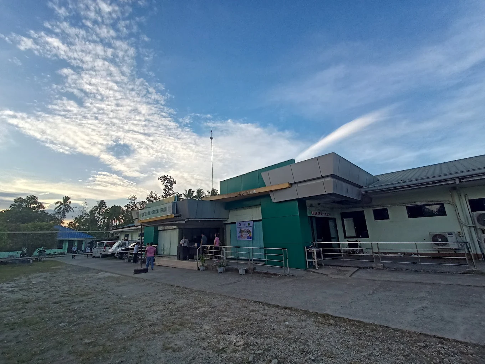

Public Services
Publicly Accessible Services
Healthcare

Catigbian District Hospital
Catigbian District Hospital is a public healthcare facility serving the residents of Catigbian and nearby municipalities in Bohol. The hospital provides accessible medical services, patient care, and community health programs dedicated to improving the well-being of local residents.
Visit Website
Education
Local Schools & Programs
Catigbian supports educational development through public schools, scholarship initiatives, and community learning programs that help students achieve quality education.
Learn More
Tourism
Discover Catigbian
Explore the beauty, culture, and traditions of Catigbian through local destinations, festivals, and eco-tourism attractions across the municipality.
Explore Tourism
Emergency
Emergency Assistance
Access emergency hotlines and response services for medical, disaster, rescue, and public safety concerns within the municipality of Catigbian.
View Hotlines